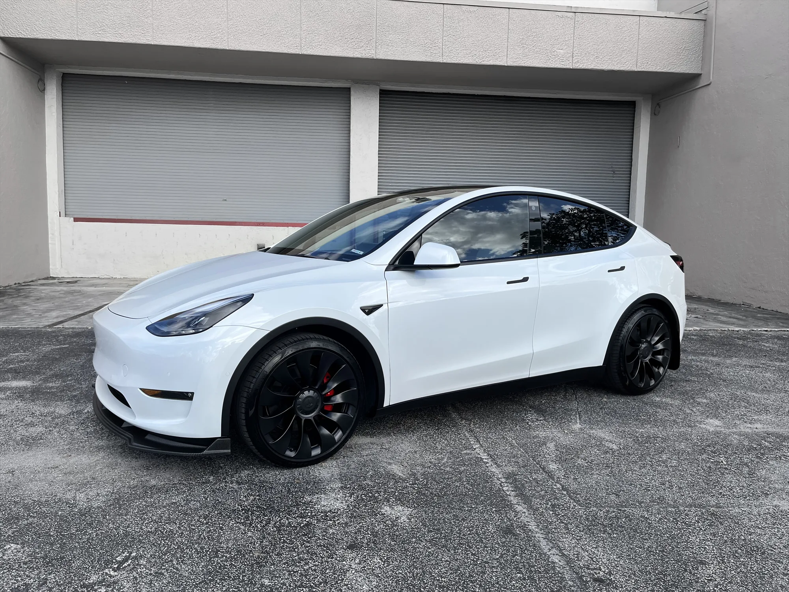
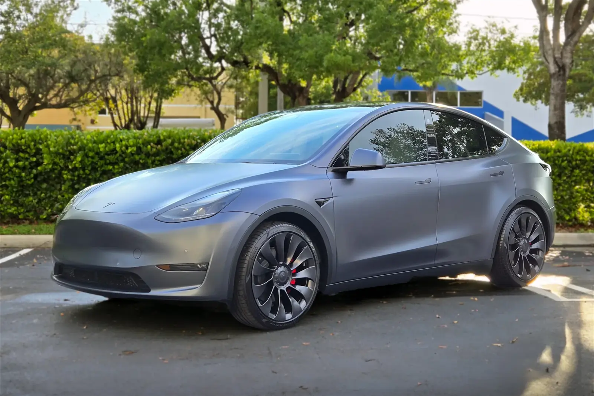
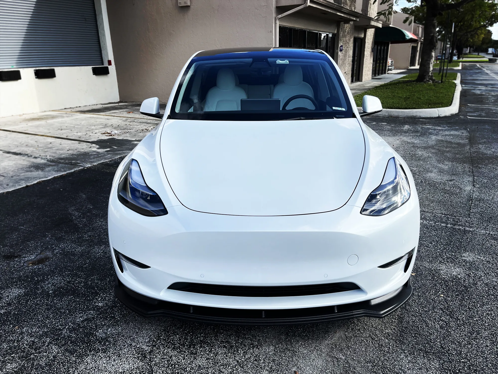
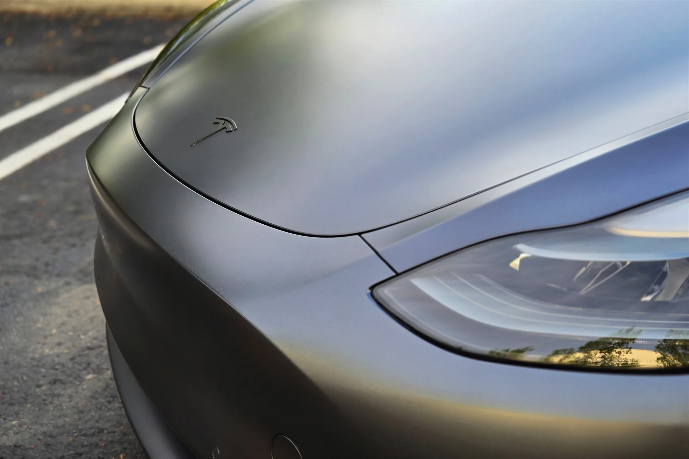
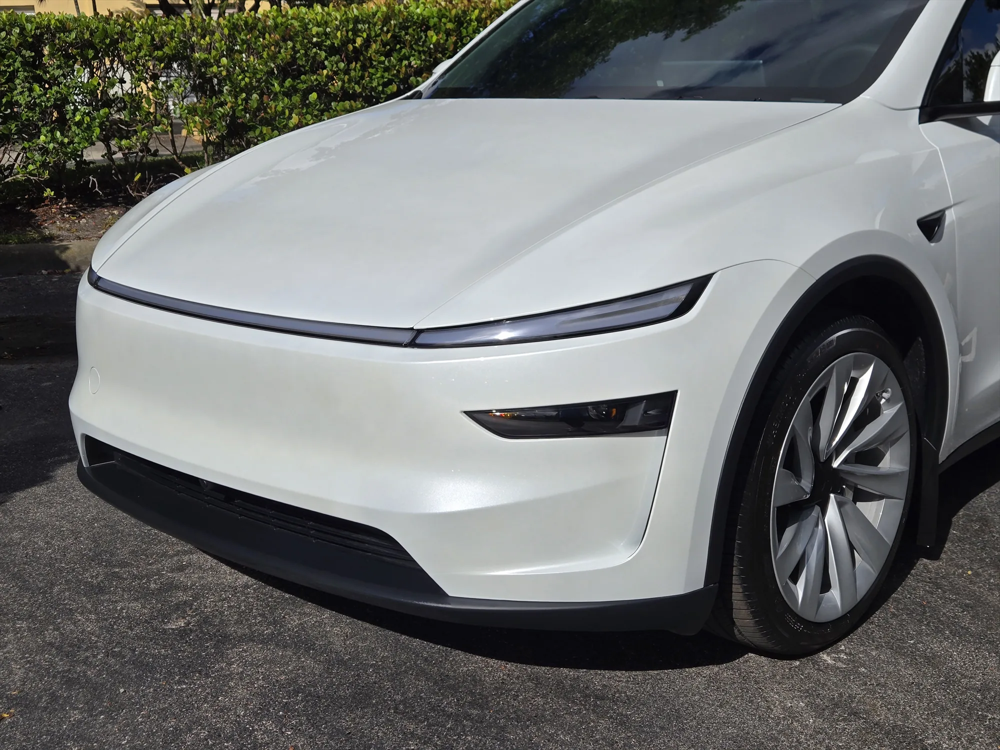
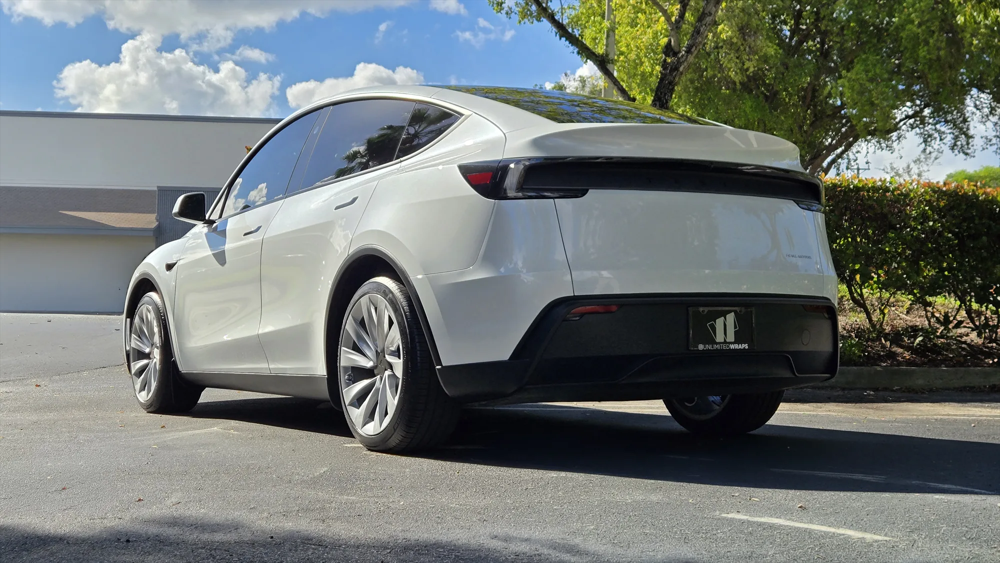
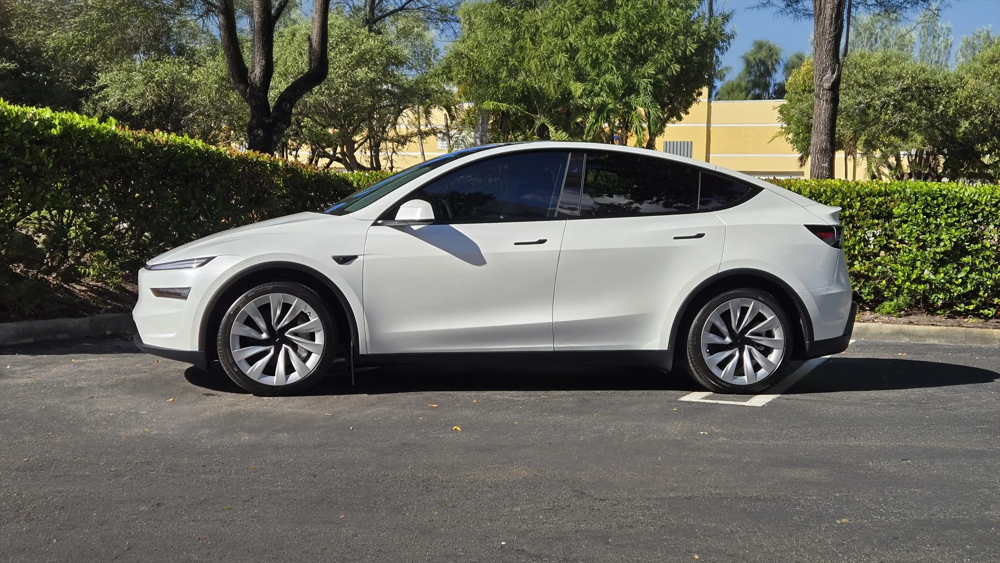

Tesla Model Y protección en Miami
El Model Y es el Tesla que más protegemos. Así blindamos su pintura, su techo de cristal y su acabado contra las calles, el sol y el desgaste de reventa de Miami.
Protegiendo el Model Y en el sur de Florida
El Tesla Model Y vive en la I-95, el Palmetto y el Turnpike, justo donde la arena y la grava pican una capa transparente de fábrica blanda. Suma el UV implacable y el calor de la tarde, y un Model Y sin protección empieza a mostrar picaduras en el capó, remolinos en la pintura y una cabina caliente bajo el techo panorámico de cristal.
Nuestro enfoque: protección de pintura donde ocurren los impactos, recubrimiento cerámico para brillo y lavado fácil, y polarizado cerámico para mantener el calor afuera. Cada servicio usa patrones XPEL cortados para el Model Y.
Trabajos reales en Model Y







Servicios que sugerimos
Protección de Pintura
Film XPEL autorreparable e invisible contra piedras, rayones y escombros. Cobertura frontal, track y cuerpo completo.
Ver PPF →Polarizado
Polarizado cerámico XPEL Prime XR Plus, hasta 98% de rechazo de calor infrarrojo sin cambiar el aspecto de tu Tesla.
Ver Polarizado →Recubrimiento Cerámico
Cerámico hidrofóbico XPEL Fusion Plus que profundiza el brillo y hace tu Tesla mucho más fácil de mantener limpio.
Ver Cerámico →Formas populares de proteger un Model Y
Puntos de partida que la mayoría elige. Cada proyecto es a medida, el precio final se confirma con una llamada o visita.
Protección Frontal
PPF frontal completo
- Capó y guardabarros completos
- Parachoques y espejos
- Film XPEL autorreparable
- Garantía de 10 años
Confort Completo
PPF frontal + polarizado + cerámico
- Todo lo de Protección Frontal
- Polarizado cerámico incl. techo de cristal
- Recubrimiento cerámico Fusion Plus
- Cabina fresca, mantenimiento fácil
Blindaje Total
PPF de cuerpo completo + polarizado + cerámico
- Todos los paneles pintados con film
- Acabado brillante o stealth
- Polarizado + cerámico
- Mejor protección de reventa
El Model Y de un vistazo
| Mejor servicio de entrada | PPF frontal completo (capó, guardabarros, espejos, parachoques) |
|---|---|
| Calor y deslumbre | Polarizado cerámico, incluido el techo panorámico de cristal |
| Brillo y lavado fácil | Recubrimiento cerámico XPEL Fusion Plus |
| Cambio de color | PPF de color en brillante, satinado o stealth |
| Film | XPEL original, patrones por modelo, garantía al VIN |
| Ubicación | Doral, FL, para todo Miami-Dade |
Preguntas frecuentes
Sigue explorando
Protege tu Model Y
Dinos tu color y cómo manejas, y te recomendamos la combinación correcta de PPF, polarizado y cerámico para tu Model Y.